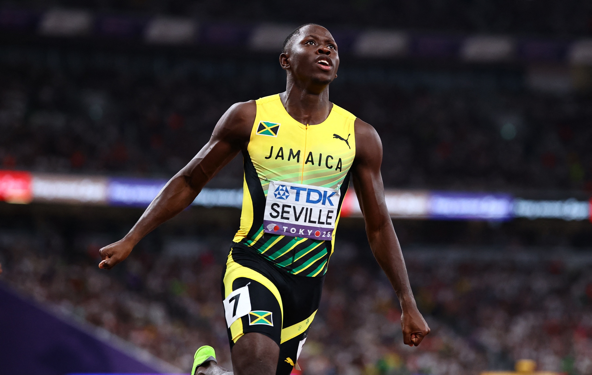
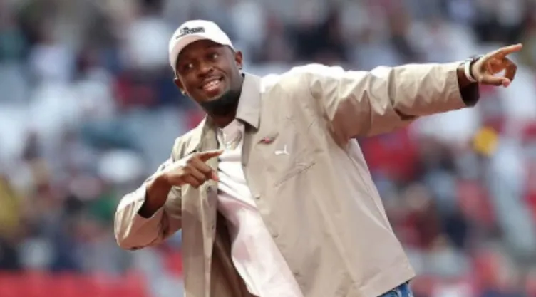
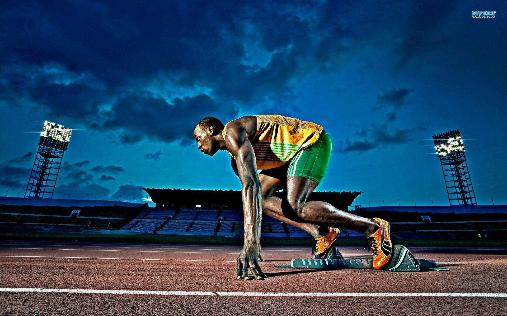

Hello,I'm Usain Bolt
Jamaican Runner
Born On August 21 1986 In Trelawny , Jamaica
Usain Bolt is widely regarded as the greatest sprinter in history. Born on August 21, 1986, in Trelawny, Jamaica, he rose to global stardom by dominating the 100m and 200m events for over a decade. Bolt set world records of 9.58 seconds in the 100m and 19.19 seconds in the 200m at the 2009 World Championships in Berlin — marks that still stand today. Nicknamed "Lightning Bolt," he won eight Olympic gold medals across three consecutive Games (Beijing 2008, London 2012, and Rio 2016), becoming the first man to win the 100m and 200m titles at three straight Olympics. Beyond his unmatched speed, Bolt's charisma, showmanship, and iconic lightning-bolt pose made him a global icon who transcended athletics, inspiring a generation and redefining what was thought possible in human speed.
About Usain Bolt
Early Life And Rise
Usain St. Leo Bolt grew up in Sherwood Content, Trelawny, Jamaica, where his love for sports began with cricket and football. Encouraged by his coaches to pursue athletics, Bolt quickly showed promise as a sprinter. At just 15 years old, he won the 200m at the 2002 World Junior Championships, becoming the youngest male ever to achieve such a feat. His tall frame of 6 ft 5 in (1.95 m) defied conventional sprinting wisdom, yet it became his greatest advantage, allowing him to dominate the track with long, powerful strides.
Olympic Glory
Bolt’s breakthrough came at the 2008 Beijing Olympics, where he stunned the world by winning gold in the 100m, 200m, and 4x100m relay—all in record-breaking fashion. He repeated this historic “triple” at the 2012 London Olympics and again at the 2016 Rio Olympics, cementing his legacy as the only sprinter to achieve three consecutive Olympic doubles in the 100m and 200m. In total, he earned 8 Olympic gold medals and 11 World Championship titles, making him one of the most decorated athletes in history
Records And Achievements
Bolt’s most iconic record is his 9.58 seconds in the 100m, set in 2009 at the Berlin World Championships—a time that still stands today. He also holds the 200m world record at 19.19 seconds, showcasing his dominance across sprinting disciplines. Nicknamed the “Lightning Bolt,” his trademark victory pose became a symbol of confidence and joy in sports. Beyond medals, his performances redefined sprinting, proving that tall athletes could excel in explosive short-distance races.
Life Beyond The Track Of Race
After retiring in 2017, Bolt explored new ventures, including attempts to play professional football with clubs like Borussia Dortmund and Central Coast Mariners. He also invested in businesses, launching his own electric scooter brand and remaining active in global sports promotions. Known for his charisma and humor, Bolt continues to inspire athletes worldwide, embodying the spirit of perseverance and excellence. His biography is not just about speed—it’s about breaking barriers, entertaining millions, and leaving a legacy that transcends athletics.
Acheivements

At The 2000 World Junior Championships
In that meet, racing before a crowd of 36,000 in Jamaica’s National Stadium in Kingston, Bolt—just 15 years old at the time—won gold in the 200 metres, becoming the youngest-ever male world junior champion in any event.

At The 2008 Olympic Games
Bolt became the first man since American Carl Lewis in 1984 to win the 100 metres, 200 metres, and 4 ×100-metre relay in a single Olympics and the first ever to set world records (9.69 sec, 19.30 sec, and 37.10sec, respectively) in all three events.
At The 2012 Olympic Games In London
Bolt defended his titles in the 100-metre and 200-metre events (setting an Olympic record in the former) to become the first person to win both races in consecutive Olympiads.

At The 2016 Olympics Games In Rio De Janeiro
where he captured golds in the 100-metre, 200-metre, and 4 × 100-metre relay events, becoming the first person to win golds in the two individual sprints in three straight Olympics.

At The 2017 World Championships
He retired from athletics after the 2017 world championships, where he won a bronze medal in the 100-metre sprint and finished in eighth place as a member of the 4 × 100-metre relay team after injuring a hamstring during the final.
Photos Of Usain Bolt




